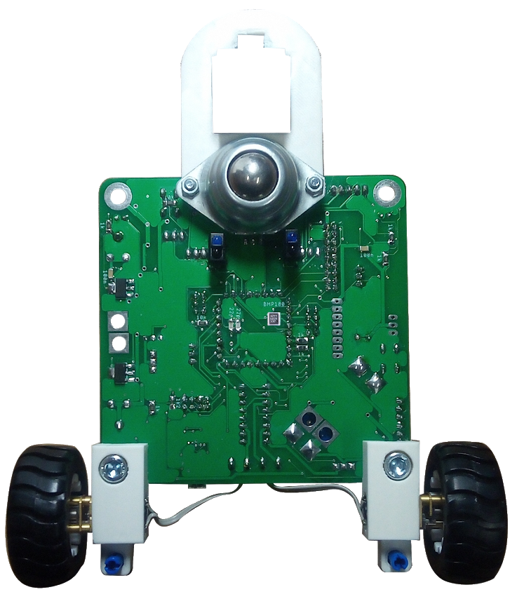
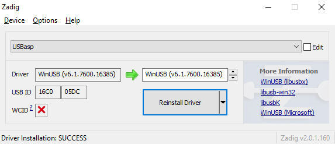
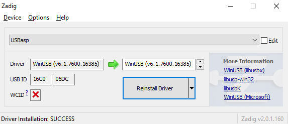

MainBoard description
MainBoard je hlavný plošný spoj robota Cing.
Prepája všetky komponenty a obsahuje aj niekoľko
základných senzorov. Obsahuje microUSB port, ktorý slúži na nabíjanie
batérie a pri pokročilejších procesoroch umožnuje vypisovanie hodnôt
do počítača. Taktiež obsahuje porty I2C, Serial, Header1 a Header 2, ktoré
slúžia na pripojenie ďalších senzorov a modulov. Porty ServoA,ServoB a ServoC
slúžia na pripojenie Servo motorov, prípadne regulátorov. MainBoard obsahuje
taktiež 4 individuálne adresovateľné RGB led diódy WS2812.
Top components
- Light sensors
- Lipo Charger
- Header1
- Header2
- Servo connectors:A,B,C
- IR sensor
- WS2812
- Tlačidlo
- Gyro
- Processor socket
- Battery holder
- Lipo Charger
- Potenciometer
- Motor Driver
- DC booster
- I2C Header
- Serial Header
- MicroUSB

Bottom components
- Lego sensor adapter
- Line sensors
- Barometric pressure sensor
- Motors
Attiny85
Getting started with robot
V tejto kapitole sa zoznámime
s programovacím prostredím robota
Cing a naučíme robota Cing pohnúť sa
z miesta. Nebudeme používať žiadne
senzory, pretože našou úlohou bude
robota Cing rozhýbať.
Budeme potrebovať:
- Robota Cing s processorom Attiny85
- ICSP ASP programátor
Going forward and left
Strategy:
Robot Cing sa bude pohybovať na
oboch motoroch dopredu, na pravom
motore doľava a na ľavom motore
doprava.
Program:
Explenation:
V druhom a štvrtom riadku programu sú
príkazy určené pre programovacie
prostredie, ktoré povedia, že budeme
používať zjednodušené príkazy pre
Attiny85 (implementujú knižnicu
<Attiny85_IO_basic.h>).
Príkazy vo void loop(){} v svorkových
zátvorkách:{} bežia v nekonečnom
procese a opakujú sa. Príkazy vo void setup(){} v svorkových
zátvorkách:{} zbehnú iba
raz a používajú sa nastavenie elektroniky. Kedže používame knižnice,
nemusíme nastavovať elektroniku a preto ostane void setup(){} prázdny.
Attiny.motor (“A”, 1, “digital”) ⇒
pomocou tohto príkazu robot Cing
zapne motor “A” na 100%
(1=100%). V prípade, že by v príkaze
bola v druhom parametri 0, motor sa
vypne (0=0%).
Prvý parameter, ktorý môže obsahovať
“A”, ”B”, ”AB” určuje, pre ktorý
motor/motory sa vzťahujú nasledujúce
parametre príkazu.
Posledný parameter určuje spôsob
zapínania motoru (“digital”, “analog”).
V prípade, že je parameter nastavený
na “analog”, vieme motor regulovať od
0% po 100%.
V nasledujúcom príkaze má motor
nastavený parameter na 33% ⇒
Attiny.motor(“B”, 33, ”analog”).
Príkaz delay (2000) ⇒ čaká 2000 milisekúnd.
Ako si môžete vyskúšať, robot sa hýbe
dve sekundy smerom dopredu oboma
motormi, potom 1000 milisekúnd
motorom “A” dopredu, pričom motor
“B” stojí.
Speeding up and slowing down
Budeme potrebovať:
- Robota Cing s processorom Attiny85
- ICSP ASP programátor
Strategy:
Robot Cing bude postupne zvyšovať svoju rýchlosť a potom postupne spomaľovať.
Program:
Explenation:
V druhom a štvrtom riadku programu sú
príkazy určené pre programovacie
prostredie, ktoré povedia, že budeme
používať zjednodušené príkazy pre
Attiny85 (implementujú knižnicu
<Attiny85_IO_basic.h>).
Príkazy vo void loop(){} v svorkových
zátvorkách:{} bežia v nekonečnom
procese a opakujú sa.Príkazy vo void setup(){} v svorkových
zátvorkách:{} zbehnú iba
raz a používajú sa nastavenie elektroniky. Kedže používame knižnice,
nemusíme nastavovať elektroniku a preto ostane void setup(){} prázdny.
V deviatom riadku programu vytvárame
cyklus for, ktorý sa chová ako počítadlo, pre ktoré platí, že hodnota
x=0, a kým je x<101, tak po každom
dokončení cyklu for ku x pripočíta 1.
Znamená to teda, že robot bude
postupne zrýchľovať z 0% na 100% na
parametri “analog” a následne
spomaľovať zo 100% na 0% na
parametri “analog”. Pokiaľ chceme dosiahnuť, aby nám cyklus
for vrátil hodnoty 0 až 100 a nemuseli sme písať 0 až 101 stačí pri porovnaní použiť znamienko <=.
Tým istým spôsobom vieme docieliť aj znižovanie rýchlosti, no vtedy musíme použiť znamienko >=.
Line following using 1 sensor
V tejto kapitole si ukážeme, ako
naprogramovať robota Cing, aby sa
pohyboval po čiare.
Budeme potrebovať:
- Robota Cing s processorom Attiny85
- ICSP ASP programátor
Strategy:
Robot Cing bude sledovať čiaru
senzorom tak, že ak svetelný senzor
nasníma čiaru na plátne, pohne pravým
motorom dopredu. Ak čiaru nenasníma,
pohne ľavým motorom.
Program:
Explenation:
V druhom a štvrtom riadku programu sú
príkazy určené pre programovacie
prostredie, ktoré povedia, že budeme
používať zjednodušené príkazy pre
Attiny85 (implementujú knižnicu
<Attiny85_IO_basic.h>).
Príkazy vo void loop(){} v svorkových
zátvorkách:{} bežia v nekonečnom
procese a opakujú sa.Príkazy vo void setup(){} v svorkových
zátvorkách:{} zbehnú iba
raz a používajú sa nastavenie elektroniky. Kedže používame knižnice,
nemusíme nastavovať elektroniku a preto ostane void setup(){} prázdny.
V siedmom riadku sa overuje hodnota
svetelného senzora číslo 1 – ak je jeho
analogová hodnota >50, vypne motor B
a zapne motor A. Ak je jeho
hodnota <=50,
vykonajú sa príkazy v else. Príkazy v else vypnú motor B a
zapnú motor A.
Line following using 2 sensors
V tejto kapitole si ukážeme, ako
naprogramovať robota Cing, aby sa
pohyboval po čiare pomocou 2 senzorov.
Budeme potrebovať:
- Robota Cing s processorom Attiny85
- ICSP ASP programátor
Strategy:
Robot Cing bude sledovať čiaru
pomocou dvoch svetelných senzorov.
Oba motory idú dopredu, pokiaľ jeden
zo svetelných senzorov nenasníma
čiaru. Ak ju nasníma, motor na tej
strane sa zastaví.
Program:
Explenation:
V druhom a štvrtom riadku programu sú
príkazy určené pre programovacie
prostredie, ktoré povedia, že budeme
používať zjednodušené príkazy pre
Attiny85 (implementujú knižnicu
<Attiny85_IO_basic.h>).
Príkazy vo void loop(){} v svorkových
zátvorkách:{} bežia v nekonečnom
procese a opakujú sa.Príkazy vo void setup(){} v svorkových
zátvorkách:{} zbehnú iba
raz a používajú sa nastavenie elektroniky. Kedže používame knižnice,
nemusíme nastavovať elektroniku a preto ostane void setup(){} prázdny.
V siedmom riadku sa overuje
podmienka pre svetelný senzor číslo
1, teda či je jeho hodnota <50.
Ak je jeho hodnota <50, zastaví motor
A.
Ak je hodnota väčšia, motor
A zapne.
V desiatom riadku sa overuje podmienka
pre svetelný senzor číslo 2.
Ak je jeho hodnota <50, zastaví motor
B.
Ak je hodnota väčšia, motor B sa zapne.
V prípade, že ani jedna z týchto podmienok nieje vykonaná spustí
sa else na jedenástom riadku, ktorý zapne motory AB.
Comparing temperature
V tejto kapitole si ukážeme, ako
naprogramovať robota Cing tak, aby
reagoval na zmenu teploty s využitím
tepelného senzora. Robot sa po zohriatí
senzora začne hýbať.
Budeme potrebovať:
- Robota Cing s processorom Attiny85
- ICSP ASP programátor
- Tepelný senzor
Strategy:
Robot Cing bude stáť pokiaľ sa
okolitá teplota nezvýši nad 30 °C.
Potom sa začne pohybovať dopredu.
Program:
Explenation:
V prvom a druhom riadku programu sú
príkazy určené pre programovacie
prostredie, ktoré povedia, že budeme
používať zjednodušené príkazy pre
Attiny85 (implementujú knižnicu
<Attiny85_IO.h>).
Príkazy vo void loop(){} v svorkových
zátvorkách:{} bežia v nekonečnom
procese a opakujú sa.Príkazy vo void setup(){} v svorkových
zátvorkách:{} zbehnú iba
raz a používajú sa nastavenie elektroniky. Kedže používame knižnice,
nemusíme nastavovať elektroniku a preto ostane void setup(){} prázdny.
V prvom riadku procedúry sa overuje
hodnota tepelného senzora.
Ak je jeho hodnota >30
stupňov, zapne motor A a motor B.
Ak je jeho hodnota <30
stupňov, vypne motory AB.
Comparing shine
V tejto kapitole si vytvoríme program,
ktorým rozhýbeme robota Cing
pomocou senzora osvetlenia.
Budeme potrebovať:
- Robota Cing s processorom Attiny85
- ICSP ASP programátor
- Senzor osvetlenia(Shine senzor)
Strategy:
Robot Cing bude stáť. Ak osvetlíme
senzor osvetlenia na viac ako 50%, Cing
sa začne hýbať dopredu.
Program:
Explenation:
V prvom a druhom riadku programu sú
príkazy určené pre programovacie
prostredie, ktoré povedia, že budeme
používať zjednodušené príkazy pre
Attiny85 (implementujú knižnicu
<Attiny85_IO.h>).
Príkazy vo void loop(){} v svorkových
zátvorkách:{} bežia v nekonečnom
procese a opakujú sa.Príkazy vo void setup(){} v svorkových
zátvorkách:{} zbehnú iba
raz a používajú sa nastavenie elektroniky. Kedže používame knižnice,
nemusíme nastavovať elektroniku a preto ostane void setup(){} prázdny.
V deviatom riadku procedúry sa overuje
podmienka pre senzor osvetlenia.
Ak je osvetlený na viac ako 20%, robot
Cing pôjde dopredu na oboch
motoroch.
Ak podmienka splnená nie je, robot
Cing bude stáť.
Setting variable value
V tejto kapitole budeme vytvárať
programy, pomocou ktorých bude Cing
počítať čiary a na základe toho
vykonávať ďalšie procesy.
Budeme potrebovať:
- Robota Cing s processorom Attiny85
- ICSP ASP programátor
- Potenciometer externý
Strategy:
Robot Cing pôjde dopredu, ak mu hodnotu
na potenciometri nastavíme na viac ako
50%. Ak bude hodnota nižšia ako 50%,
Cing bude stáť.
Program:
Explenation:
V prvom a druhom riadku programu sú
príkazy určené pre programovacie
prostredie, ktoré povedia, že budeme
používať zjednodušené príkazy pre
Attiny85 (implementujú knižnicu
<Attiny85_IO.h>).
Príkazy vo void loop(){} v svorkových
zátvorkách:{} bežia v nekonečnom
procese a opakujú sa.Príkazy vo void setup(){} v svorkových
zátvorkách:{} zbehnú iba
raz a používajú sa nastavenie elektroniky. Kedže používame knižnice,
nemusíme nastavovať elektroniku a preto ostane void setup(){} prázdny.
V deviatom riadku procedúry
overujeme, či je na potenciometri
nastavená hodnota vyššia ako 50%.
Ak je podmienka splnená, Cing pôjde
dopredu.
Ak podmienka splnená nie je, robot
ostane stáť.
Counting lines
V tejto kapitole budeme vytvoríme
program, pomocou ktorého bude Cing
počítať čiary a na základe toho
vykonávať ďalšie procesy.
Budeme potrebovať:
- Robota Cing s processorom Attiny85
- ICSP ASP programátor
- Potenciometer externý
Strategy:
Robot Cing bude chodiť po plátne, na
ktorom bude mať niekoľko čiar.
Pomocou svetelného senzora
spočíta všetky čiary. Pokial nenapočíta
10 čiar pojde dopredu. Po napočítaní
10-tich čiar sa otoči a zastane.
Program:
Explenation:
V prvom a druhom riadku programu sú
príkazy určené pre programovacie
prostredie, ktoré povedia, že budeme
používať zjednodušené príkazy pre
Attiny85 (implementujú knižnicu
<Attiny85_IO.h>).
Príkazy vo void loop(){} v svorkových
zátvorkách:{} bežia v nekonečnom
procese a opakujú sa.Príkazy vo void setup(){} v svorkových
zátvorkách:{} zbehnú iba
raz a používajú sa nastavenie elektroniky. Kedže používame knižnice,
nemusíme nastavovať elektroniku a preto ostane void setup(){} prázdny.
V treťom riadku procedúry vytvárame
premennú x s hodnotou 0.
V desiatom riadku zadávame
podmienku, ktorá hovorí, že program
v zátvorkách sa bude opakovať, pokiaľ x
<=10. Kým podmienka nebude splnená,
robot pôjde dopredu, pričom bude
overovať či svetelný senzor nenasnímal
čiaru.
Ak ju nasnímal x++ pridá premennej
hodnotu 1.
Ak x nadobudne hodnotu 10, vykoná sa
proces v zátvorkách else.
Attiny84
V prvej časti zo série robota Cing sme si ukázali
najzákladnejšie pohyby robota, pohyby vpred a do strán
a tiež sme si vyskúšali prácu z rôznymi senzormi
a funkciami s parametrami.
V tejto príručke si ukážeme, ako vylepšiť pohyby,
vytvárať zložitejšie príkazy, vyskúšame si prácu s novými
senzormi či komponentmi a naučíme sa, ako správne
používať príkazy. Navyše ku kapitolám pribudnú úlohy,
takže sa nemusíte obávať, že by toho bolo málo.
Opäť sa budeme vzdelávať hravou a zábavnou formu.
Nemusíte sa báť, že to bude ťažké – práve naopak!
Vďaka poznatkom a vedomostiam z predchádzajúcej
časti to bude ešte jednoduchšie!
Pokračujeme v pohybe
V predchádzajúcej časti sme sa zoznámili
s programovacím prostredím robota Cing a naučili
robota Cing pohnúť sa z miesta. S týmto procesorom
však pribudla aj funkcia cúvania. V tejto kapitole si
ukážeme, ako naprogramovať Cinga tak, aby sa hýbal
nielen dopredu, ale aj dozadu.
Budeme potrebovať:
- Robota Cing s processorom Attiny84
- ICSP ASP programátor
Going backward and forward
Strategy:
Robot Cing sa bude pohybovať na oboch
motoroch dopredu nejakú dobu, a potom cúvne naspäť
dozadu.
Program:
Explenation:
V druhom a štvrtom riadku programu sú
príkazy určené pre programovacie
prostredie, ktoré povedia, že budeme
používať zjednodušené príkazy pre
Attiny84 (implementujú knižnicu
<Attiny84_IO_basic.h>).
Príkazy vo void loop(){} v svorkových
zátvorkách:{} bežia v nekonečnom
procese a opakujú sa.Príkazy vo void setup(){} v svorkových
zátvorkách:{} zbehnú iba
raz a používajú sa nastavenie elektroniky. Kedže používame knižnice,
nemusíme nastavovať elektroniku a preto ostane void setup(){} prázdny.
V deviatom riadku programu zapíname motory
“AB“ na 1000 milisekúnd (1 sekundu). Potom tieto
motory zapneme na parameter -1, čo znamená, že
motory “AB“ pôjdu aj naďalej, avšak nie
dopredu, ale dozadu. Teda na rozlíšenie smeru pohybu
kolies používame znamienko -.
Ak ku parametru nedáme znamienko, znamená to, že sa
robot bude hýbať dopredu.
 Následne v options zvoľte možnosť "List All Devices". Z menu vyberte USBASP prípadne UNKNOWN. Ako driver zvoľte "libusb-win32" a stlačte "Install WCID Driver".

Následne v options zvoľte možnosť "List All Devices". Z menu vyberte USBASP prípadne UNKNOWN. Ako driver zvoľte "libusb-win32" a stlačte "Install WCID Driver".
